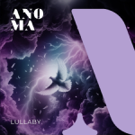
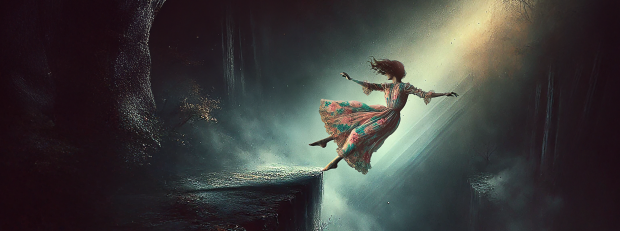
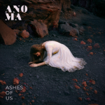
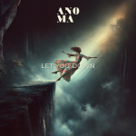
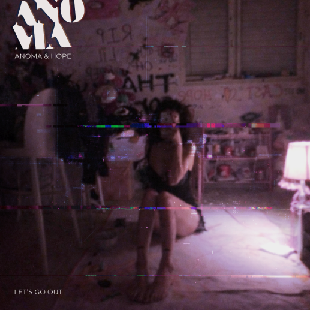
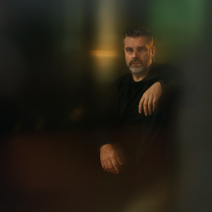
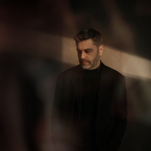
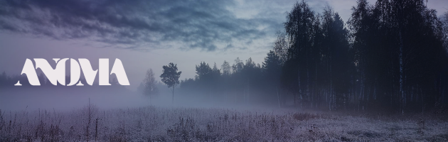
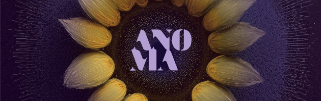

01
Lullaby
Vocal-centered and intimate, where Ukrainian-rooted emotion meets cinematic electronic atmosphere.
RHYTHM
UNVEILS
THE
MYSTERY
ANOMA blends ethnic vocals, folk-inspired textures, and traditional instruments with deep house, breakbeat, and drum & bass, creating electronic music rooted in cultural memory and shaped for a modern audience.
About
ANOMA is an electronic music project by an independent producer blending ethnic vocals, folk instruments, and modern rhythms across deep house, breakbeat, and drum & bass. Rooted in Ukrainian cultural elements and shaped by life between Ukraine and Israel, ANOMA explores the meeting point between ancestral voices, emotional storytelling, and future-facing electronic production.
Artist Statement
ANOMA exists in the space between memory and movement. Traditional voices and folk-rooted sounds do not have to remain in the past. They can be carried into modern electronic music, reshaped by bass, rhythm, texture, and atmosphere, while still keeping their emotional weight.

Featured Music
These tracks are curated as a listening path for media, curators, labels, and collaborators.

Vocal-centered and intimate, where Ukrainian-rooted emotion meets cinematic electronic atmosphere.
Melodic electronic songwriting for a first contact with ANOMA’s softer, more accessible side.

A darker emotional cut about memory and aftermath, shaped by restrained electronic tension.

A direct, song-led electronic track balancing vulnerability with a clear contemporary pulse.
Latest Release
Release date: Mar 19, 2026
A vulnerable late-night confession wrapped in modern electronic production. This track captures the fragile space between love and fear, when two people want to hold on, but don’t know if they can.
Glitchy production blended with liquid DnB rhythms, rolling breakbeats, deep sub-bass, syncopated percussion, airy pads, shimmering synths and granular textures.

ANOMA exists in the space between
Traditional voices and folk-rooted sounds can be carried into modern electronic music, reshaped by bass, rhythm, texture, and atmosphere.
Visual Assets
This section gives media and partners reusable materials without asking for files manually. Use final assets only before publishing.




Facts
Contact